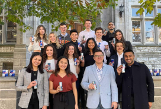
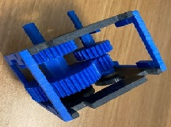
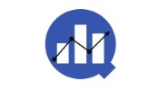

Brandon Chung
Projects & Extracurriculars
These are some of my most notable projects, where I’ve applied my collaborative and leadership skills to deliver tangible results.
Personal Thermal Management System
Collaborated on the development of a personal thermal management system for healthcare professionals by conducting heat transfer simulations in SolidWorks, guided by detailed mathematical modeling. Focused on optimizing cooling performance under PPE to enhance user comfort and functionality. Actively contributed to design iterations, working closely with the team to refine lightweight and low-profile solutions. Evaluated various cooling methods and materials to ensure thermal efficiency and ergonomic suitability. Played a key role in addressing complex design challenges through collaborative problem-solving and data-driven decision-making.
Queen's Space Engineering Team
 I engineered and modeled an optimal lander design using SolidWorks, reducing dead load by 15% and increasing yield strength by 17%. By analyzing data from NASA and MIT rover experiments, I implemented advanced material selection, enhancing performance within budget constraints. I also developed additional features such as foldable legs, and conducted stress-strain simulations under real-life conditions.
I engineered and modeled an optimal lander design using SolidWorks, reducing dead load by 15% and increasing yield strength by 17%. By analyzing data from NASA and MIT rover experiments, I implemented advanced material selection, enhancing performance within budget constraints. I also developed additional features such as foldable legs, and conducted stress-strain simulations under real-life conditions.
Conference on Industry and Resources: Queen's Engineering

I raised over $6,000 in sponsorships, enabling CIRQUE to expand its outreach. By developing targeted marketing strategies, I contributed to an 18% increase in delegate attendance compared to 2019, leveraging platforms like LinkedIn, Instagram, and Facebook.
Gear Box
 For the gearbox project, I designed an optimal assembly to balance both top speed and torque to meet competition demands. The gearbox was engineered to achieve high acceleration within 3 meters for the speed event while delivering sufficient torque for the climb event. I analyzed and iterated designs to maximize vehicle performance on a 1.05-m circular ramp, ensuring efficiency across all competition metrics. As a result, the design placed top 10 percentile out of a class of over 100 mechanical engineers. This project showcased my ability to balance mechanical efficiency and adaptability in real-world scenarios.
Bone Scaffold 3D Design
 For a pediatric bone scaffold project, I designed and modeled a structure adhering to strict criteria. After conducting stress-strain simulations and 3D printing multiple iterations, the final design was 35% stronger than the initial prototype. The model was validated using the Bionix Servohydraulic Test System.
For a pediatric bone scaffold project, I designed and modeled a structure adhering to strict criteria. After conducting stress-strain simulations and 3D printing multiple iterations, the final design was 35% stronger than the initial prototype. The model was validated using the Bionix Servohydraulic Test System.
Arduino UNO BMP 280 Sensor
 I programmed a smart LED light bulb using C++ that adjusts brightness based on environmental lighting. Additionally, I developed a thermostat using the BMP 280 sensor to detect temperature and pressure. I conducted stress-strain analyses using load cells and strain gauges connected to the Arduino and explored the effects of bridge circuits.
I programmed a smart LED light bulb using C++ that adjusts brightness based on environmental lighting. Additionally, I developed a thermostat using the BMP 280 sensor to detect temperature and pressure. I conducted stress-strain analyses using load cells and strain gauges connected to the Arduino and explored the effects of bridge circuits.
Queen's Biomechatronic Team
 As Director of Finance, I led fundraising efforts and managed capital allocation. I worked with the team to create a sponsorship package and assisted in assembling the team’s 3D printer, contributing to the team's research and development capabilities.
As Director of Finance, I led fundraising efforts and managed capital allocation. I worked with the team to create a sponsorship package and assisted in assembling the team’s 3D printer, contributing to the team's research and development capabilities.
Earthquake Resistant Structure
 Collaborating with a team of five, I helped design an earthquake-resistant building adhering to Indonesian building codes. Using local, sustainable materials, we conducted stress-strain simulations in SolidWorks to ensure the structure could withstand real-life seismic conditions.
Collaborating with a team of five, I helped design an earthquake-resistant building adhering to Indonesian building codes. Using local, sustainable materials, we conducted stress-strain simulations in SolidWorks to ensure the structure could withstand real-life seismic conditions.
Queens University Algorithmic Network & Trading Team
 As a leader of QUANTT, I directed strategic capital allocation, organized keynote speakers, and managed the hiring process. I also developed algorithms to track market trends and optimize buy/sell points based on user risk tolerance.